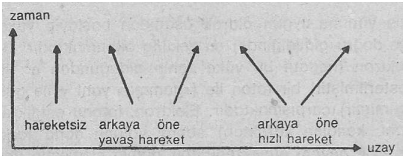
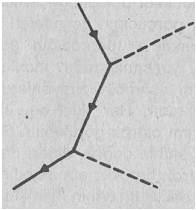

Modern fizik çok çarpıcı bir biçimde, Doğu mistisizminin en temel görüşlerimden bir tanesini doğrulamıştır. Yani bize, doğayı açıklamak için kullandığımı? tüm kavramların sınırlı olduğunu, bunların doğanın bir özelliği olmadıklarını ve inanışımızın aksine, bu kavramların aklımızın bir ürünü ve soyutlamaları olduklarını, bir arazinin değil, yalnızca bir haritanın parçalan olduklarını göstermiştir. Tecrübelerimizi ne kadar genişletirsek genişletelim, akılcı zihnimizin sınırları yine de karşımıza çıkacaklar ve böylece bizi sahip olduğumuz kavramları değiştirmeye ya da bazı hallerde tamamen ortadan kaldırmaya yöneltecektirler.
Örneğin uzay ve zaman hakkındaki yaklaşımımız neredeyse tümüyle, kendimizce gerçeklik hakkında geliştirdiğimiz haritaya dayanmaktadır. Bunun amacı, çevremizdeki nesne ve olayları bir düzene sokmaktır. Yine bu nedenle, uzay ve zaman tasarımlarımız yalnızca günlük hayatımızda değil, ayrıca bilim ve felsefe yardımı ile açıklamaya çalıştığımız doğanın anlaşılmasında da hayatî bir öneme sahiptir. Örneğin fizik alanında, formülasyonu için uzay ve zaman kavramlarına gerek duymayan hiç bir yasa yok gibidir. izafiyet kuramının söz konusu temel kavramlarda meydana getirdiği olağanüstü değişimler de, bundan dolayı, bilim tarihinin en önemli ve en büyük devrimlerinden birini yaratmıştır.
Klasik fizik, içerdiği maddesel nesnelerden bağımsız olan ve Öklid geometrisine uyan, mutlak ve üç boyutlu bir «uzay» ve yine maddesel dünyadan bağımsız, düzenli bir biçimde akıp giden mutlak ve ayrı bir boyut olan «zaman» yaklaşımına dayanmaktaydı Batı dünyasında uzay ve zaman ile ilgili bu yaklaşımın bilim adamlarının ve filozofların zihinlerinde o kadar derin bir etkisi vardır ki, bu kavramların, sonunda doğanın gerçek ve tartışmasız özelliklerini yansıttıkları bile kabul edilmiştir.
Geometrinin, doğayı anlatmak için yarattığımız çerçevenin bir parçası olmaktan çok, doğanın ayrılmaz bir özelliği olduğu görüşü, ta Yunan düşünce ve öğreti geleneklerine kadar uzanabilmektedir. Yunan matematiğinin en önemli hedeflerinden biri, uygulamalı geometriydi. Bu hedef, Yunan felsefesi üzerinde de büyük etkiler yaratmıştı. Tartışmasız ve sorgusuz bazı varsayımlardan yola çıkma yöntemi ve bunlardan tümdengelimci düşünce aracılığı ile teoremler çıkartma geleneği. Yunan felsefesinin en önemli karakterlerinden biridir. Bundan dolayı da geometri, tüm düşünsel, faaliyetlerin en önemli merkezi haline dönüşmüş ve bütün felsefî uygulamaların temelimi oluşturmuştu. Platon'un Atina Akademisinin girişi üzerinde şu sözlerin bulunduğu söylenir: «Geometriyi öğrenmeden buraya girmene izin verilmeyecektir.» Yunanlılar, geliştirmiş oldukları matematiksel teoremlerin, gerçek dünya hakkındaki sonsuz ve kesin gerçekleri yansıttıklarına ve geometrik şekillerim de mutlak güzelliğin bir belirimi olduklarına içten inanıyorlardı. Geometriye, mantığın ve güzelliğin mükemmel karışımı olarak bakıyor, böylece onun, Tanrı'sal bir orijinden geldiğini savunuyorlardı.
Buradan hareketle Platon, «Tanırı bir geometricidir» şeklinde bir hükme varmıştı.
Geometriye Tanrı'sal bir uyum olarak bakıldığından, Yunanlı'lar ipin gökyüzünün de mükemmel geometrik biçimler arzetmesi olağan sayılıyordu. Bunun anlamı da, gök cisimlerinin bir takım göksel daireler üzerinde hareket etmeleriydi. Durumu daha da «geometrikleştirmek» için, gök cisimlerinin, merkezinde yerkürenin bulunduğu iç içe geçmiş kristal küreler biçiminde ve hep birlikte hareket ettikleri düşünülmekteydi.
Daha sonraki yüzyıllarda da, Yunan geometrisinin Batı felsefe ve bilimine olan büyük etkisi devam etmiştir. Öklid'in «Elemanlar» isimli eseri, yüzyılımızın başlarına kadar Avrupa’daki okulların standart bir ders kitabını oluşturmaktaydı ve Öklid geometrisi de, neredeyse iki bin yıl, uzayın gerçek doğası olarak kabul edilmişti. Bilim adamlarına ve filozoflara geometrinin doğanın temel bir özelliği olmadığını ve aklımızın bir ürünü olduğunu göstermek için, Einstein çapında bir insana gerek duyulmuştur. Henry Morgenau’nun dediği gibi:
«İzafiyet kuramının en can alıcı noktası, geometriyi aklımızın bir ürünü olarak gösterebilmiş olmasıdır. Ancak bu keşif kabul edildikten sonra aklımız, uzay ve zaman ile ilgilenebilir. Böylece onları tanımlamak için mümkün olan imkânlar açığa çıkar ve gözlemlerimizle bağdaşan formülasyonlar seçilebilir» (1).
Öte yandan Doğu felsefesi, Yunanlı'larınkine benzemeyen bir yöntemle, uzay ve zamanın aklımızın bir ürünü ve yapısı olduğunu sürekli dile getirmiştir. Doğu mistikçileri bu kavramları, diğer bütün zihinsel kavramlar gibi ele almışlar, yani onları izafî, sınırlı ve hayalî olarak görmüşlerdir. Örneğin bir Buddhist eserde şunları okumak mümkündür:
«Ey rahipler Buddha bize, geçmişin, geleceğin, âlemin ve insanların yalnızca isimler, fikir yapıları ve ortak olarak kullanılan bazı kelimelerden ibaret olduklarını öğretmiştir. Onlar, üstün bir gerçeklikten haber getiremezler» (2). Bu nedenle Uzak Doğu'da geometri, hiç bir zaman eski Yunanistan'daki kadar bir kabule erişemedi. Ancak bu, Hintli'lerin yâ da Çinli'lerin geometri hakkında bir şey bilmedikleri anlamına gelmemelidir. Bu insanlar, sahip oldukları geometri bilgilerini tapınak yapımında, toprağın ölçümünde ve gökyüzü haritalarının oluşturulmasında başarılı bir biçimde kullanmışlardır. Fakat bu bilgileri ile soyut ve ebedî gerçekleri belirlemeye çalışmamışlardır. Bu felsefî yaklaşım, kendisini, eski Doğu bilimlerinde görülen doğayı düz çizgiler ve mükemmel daireler içine sokmama eğiliminde de göstermiştir. Bu noktada Joseph Needham’ın Çin astronomisi hakkında geliştirdiği fikirler çok ilginçtir:
«Çin astronomları, açıklamalarında geometrik biçimlere gerek duymamışlardır. Çünkü evrensel organizma bütününü oluşturan her bir organizma bölümü, kendi doğasına uygun bir Tao'yu takip etmektedir. Bunların hareketleri ise temelde «temsil edilemez» bir cebirsel yapıya sahiptir. Bu yüzden Çinli'ler, Avrupalı astronomların mükemmel şekillere olan tutkularına hiç bir zaman sahip olmamışlar ve aynı nedenden dolayı da, kristal kürelerden oluşan Ortaçağ tutsaklığını yaşamamışlardır»(3).
Görüldüğü gibi. Doğu filozofları ve bilim adamları, daha o zaman izafiyet kuramının temel yaklaşımlarına sahiptiler. Yani geometri hakkındaki görüşlerimizin, doğanın mutlak ve değişmez temel özelliklerini değil, yalnızca zihinsel oluşumları yansıttıklarını, onlar daha o çağlarda kavrayabilmişlerdi. Bu konuda Aşvagoşa şunları söyler:
«Yanlış anlaşılmasın! Uzay, bölümlendirmenin bir çeşididir sadece ve kendi başına gerçek bir varlığa sahip değildir. Yani uzay ancak, olguları bölümlendirerek kavrayan bilincimiz sayesinde var olabilir» (4).
Bu açıklamanın aynısı, zaman hakkında sahip olduğumuz fikirler ve görüşler için de geçerlidir. Doğu mistikçileri, uzay ve zaman yaklaşımlarını bilincimizin belirli bazı durumları ile ilişkilendirmişlerdir. Meditasyon yardımı ile alışıldık durumun ötesine erişebilen mistikçiler, uzay ve zaman hakkındaki bilinen yaklaşımların, ulaşılabilecek en son gerçekliği yansıtmadıklarım kavrayabilmişlerdir. Mistik tecrübeleri neticesinde elde ettikleri farklılaştırılmamış uzay ve zaman kavrayışları ise, birçok yönden İzafiyet kuramında kendisini bulan modern fiziğin yaklaşımlarına benzemektedir.
Peki izafiyet kuramı ile ortaya çıkan yeni uzay ve zaman yaklaşımı nedir? Aslında söz konusu yenilik, tüm uzay ve zaman ölçümlerinin izafî oldukları buluşuna dayanmaktadır. Uzaysal belirişlerin izafiyeti yeni bir şey değildir. Uzayda bulunan bir nesnenin sahip olduğu durumun, yalnızca diğer bir nesnenin konumuna izafeten belirlenebileceği Einstein'-den önce de biliniyordu. Örneğin böyle bir izafî bağıntı, genelde üç kartezyen(*) koordinatın kullanımı ile yapılmaktadır. Koordinatların ölçülmeye başlandığı noktaya söz gelimi, «gözlemci» denilmektedir. Bu kartezyen koordinatların izafiyetini gözümüzün önünde canlandıra bilmek için, uzayda serbestçe duran iki gözlemcinin bir şemsiyeyi gözlemlediklerini varsayalım, A gözlemcisi, şemsiyeyi sol tarafında hafifçe eğik bir biçimde görmektedir. Yani şemsiyenin üst tarafı ona daha yakın gibidir. Öte yandan B gözlemcisi, şemsiyeyi sağ tarafında ve üst tarafı kendisinden biraz uzakta gibi görmektedir.
(*) Descartes'in geliştirmiş olduğu koordinat sistemi (Çev.)
A ve B isimli iki gözlemcinin bir şemsiyeye bakması
Bu iki boyutlu örneği, üç boyuta çevirirsek tüm uzaysal belirişlerin (yani, «sağ», «sol», «yukarı», «aşağı», «eğri», «düz» gibi) gözlemcinin konumuna bağlı olduğu, yani izafî olduğu ortaya çıkacaktır. Bunlar, izafiyet kuramından çok önceleri de biliniyordu. Fakat klasik fiziğin «zaman» konusundaki fikri tamamen farklıydı. Örneğin iki olayın zaman sal düzeni, tümüyle gözlemciden bağımsız olarak kabul ediliyordu. Zamanla ilgili bütün terimlerin (yani, «önce», «sonra», «anında» gibi) herhangi bir koordinat sisteminden bağımsız olarak, mutlak bir anlama ve içeriğe sahip oldukları düşünülmekteydi.
Einstein ise, zamansal belirişlerin de izafî olduklarını ve bunların da gözlemciye bağlı olduklarını kavrayabilmeyi başarmıştı. Günlük hayatımızda gözlemlediğimiz her şey, ışık hızından (yani, 186.000 mil/san) (*) çok düşük oldukları için, onları, oluştukları anda görebiliyormuşuz gibi bir düşünceye sahip oluruz. Böylece çevremizde olup, bitenleri bir zaman dilimlendirmesi ile sınıflara ayırabileceğimizi düşünürüz. Ama ne yazık ki bu görüş hatalıdır. Çünkü ışığın bile, olayın oluşumundan gözlemcinin gözüne ulaşana kadar, bir süre uzayda hareket etmesi gerekmektedir. Normal durumlarda bu süre çok kısa olduğu için, ışığın yayınımı «ansızın» diye nitelendirilir. Fakat gözlemci gözlenen nesneye göre çok yüksek bir hız ile hareket ediyorsa, bir olayın oluşum anı ile onun gözlemlenmesi arasında geçen zaman süresi, bir olaylar zincirinin Oluşumu için çok önemli olmaktadır.
(*) Yaklaşık 300.000 km/saniye. (Çev.)
Einstein bunun farkına varmış ve farklı hızlarda hareket eden gözlemcilerin olayları zaman içinde farklı biçimde düzenleyecekleri fikrini ortaya atmıştır(*). Bir gözlemci tarafından aynı anda, oluşuyormuş gibi gözüken iki olay, diğer gözlemciler için farklı bir zamansal sıralamaya sahiptir. Fakat günlük hayatımızın alışıldık hızlarında söz konusu farklılıklar, keşfedilmeyecek kadar küçüktürler. Ancak hızlar ışık hızına yaklaştığında, farklı zamansal sıralama ölçülebilir hale gelmektedir. Neredeyse ışık hızı ile hareket eden parçacıklarla uğraşan yüksek enerji fiziği dalında, zamanın izafî oluşu çoktan beri yerini almıştır ve sayısız deneyler sonucu da ispatlanabilmiştir.(**)
Zamanın izafî oluşu, bizi Newton'cu mutlak uzay kavramından da vazgeçmeye zorlamaktadır. Çünkü böyle bir uzayın her an için belirli bir madde içeriğine sahip olduğu düşünülüyordu. Fakat «anında oluş»un gözlemcinin hareket durumuna bağlı izafî bir kavramı oluşturduğu anlaşıldığından beri, bütün evreni kapsayan böyle bir zaman diliminden söz edememekteyiz. Belirli bir anda, bizden çok uzaklarda gerçekleşen bir olay, başka bir gözlemci için daha erken ya da daha sonra gerçekleşebilir. Bundan dolayı mutlak bir çerçeve dahilinde «belirli bir andaki evren» diye bir durumdan söz edemeyiz. Yani gözlemciden bağımsız, mutlak bir uzay yoktur.
(*) Bu sonuca ulaşabilmek için, ışığın hızının tüm gözlemciler için aynı olduğunu kabul etmek gerekir.
(**) Gözlemcinin, laboratuvarda bulunurken hareketsiz olduğuna dikkat ediniz. Ama öte yandan gözlemlediği olaylar, farklı hızlarda hareket eden parçacıklar tarafından oluşturulduğu için, aynı etki burada da meydana gelmektedir. Önemli olan, gözlemci ile gözlenen olaylar arasındaki izafi hızdır. Bunların hangisinin hareket ettiği aslında pek bir öneme sahip değildir.
Bu anlamda izafiyet kuramı, bize, uzay ve zaman kavramlarını içeren her türlü ölçümlerin mutlak önemlerini yitirdiklerini göstermiş ve klasik mutlak uzay ve mutlak zaman kavramlarının terkedilmesine neden olmuştur. Mendel Sachs, söz konusu gelişmenin en can alıcı noktasını şöyle dile getirmiştir:
«Einstein’ın kuramı ile ortaya çıkan asıl devrim, uzay-zaman koordinat sisteminin ayrı ve bağımsız bir fiziksel varlık olarak nesnel önemini kaybetmesi ile oluşmuştur, izafiyet kuramı, uzay ve zaman koordinatlarını, çevresini açıklamak isteyen bir gözlemcinin kullandığı dilin özellikleri olarak açıklamıştır»(5).
Çağdaş bir fizikçinin yaptığı bu açıklama, uzay ve zaman hakkındaki yaklaşımların, modern fizik ile Doğu mistisizminde artık ne kadar birbirlerine yaklaştıklarını açıkça göstermektedir. Bu konuda Doğu mistikçileri (daha önce de belirttiğimiz gibi), uzay ve zaman hakkında, «isimlerden, düşünce kalıplarından ve genel kullanım gören kelimelerden başka bir şey değildirler» demişlerdir.
Günümüzde uzay ve zaman kavramları artık, doğal fenomenleri kendi açısından dile getiren belirli bir gözlemcinin öznel rolüne indirgendiğinden, her gözlemcinin aynı fenomeni farklı biçimlerde yorumlayıp, açıklayabileceği de kabul edilmiştir. Bilim adamları bu çeşitli yorum ve açıklamalardan bazı evrensel yasaları elde edebilmek için, bunları tüm koordinat sistemleri için aynı forma getirmeye çalışmışlardır. Yani herhangi bir konumda bulunan ve birbirine izafî olarak hareket eden tüm gözlemciler için aynı olan açıklamalar bulunması amaçlanmıştır. Bu kural ve hedef, daha sonra izafiyet ilkesi olarak yerini almış ve aslında izafiyet kuramının hareket noktasını teşkil etmiştir, izafiyet kuramının tohumu, henüz on altı yaşında olan Einstein’ın çok önemli bir karşıtlığı fark etmesiyle atılmıştır. Einstein, ışık hızıyla hareket eden bir gözlemciye, onun yanında hareket eden bir ışık demetinin nasıl görüneceğini merak etmişti. Kendi sorusuna yine kendisi şöyle bir cevap vermişti: «Gözlemci, söz konusu ışık demetini hareket etmeden salınan (yani, ossile eden) bir elektromanyetik alan olarak algılayacaktır ve böylece herhangi bir dalga oluşumu meydana gelmeyecektir.» Genç Einstein, bir gözlemci için bilinen bir elektromanyetik fenomenin (yani, bir ışık dalgasının), başka bir gözlemci için fiziksel yasalara aykırı bir fenomen olarak gözükebildiği sonucuna varmıştı. Fakat böyle bir fenomen, daha henüz fizik dalında görülmüş değildi. Bu yüzden kendisi bile, böyle bir sonucu bir türlü kabul edemiyordu. Einstein, daha sonraki yıllarda, izafiyet ilkesinin, elektromanyetik fenomenlerin açıklanışında, tüm uzaysal ve zamansa! belirimleri izafî olarak kabul ederek, kullanılabileceğini anlamıştır. Buna göre, hareket eden cisimlerle ilgili fenomenlere uygulanan mekanik ve elektrodinamik yasalar (yani, elektriğin ve manyetizmanın kuramları) ortak bir «izafî» çerçeve içinde formüle edilebilirlerdi. Bu şekilde, zaman, uzayın üç koordinatı ile birleştirilerek, gözlemciye göre (yani, izafî olarak) belirlenen dördüncü bir koordinata dönüştürülebilirdi.
İzafiyet ilkesinin doğrulanmasını, yani bir kişinin geliştirdiği bir kuramda bulunan denklemlerin, tüm koordinat sistemlerinde geçerli olup olmadığını saptayabilmek için, uzay ve zaman belirimlerinin bir koordinat sisteminden (ya da «referans sisteminden») diğer bir koordinat sistemine (referans sistemine) aktarılabilir ve bu aktarma işleminin de tam olarak tanımlanmış olması gerekir. Bu türden aktarmalar (ya da teknik deyimi ile «transformasyonlar») klasik fizikte de biliniyor, çok kereler kullanılıyordu. Şemsiyeye bakan iki gözlemci örneğimizde, iki referans sistemi arasındaki aktarma, dikey ve yatay çizgilerle temsil edilen A gözlemcisinin koordinatlarını, B gözlemcisinin iki koordinatı ile birleştirilmiş olarak yansıtmaktadır (tersi de geçerlidir). Temel geometri kuralları kullanarak, bu iki ilişkinin kesin formülasyonu rahatlıkla yapılabilir.
Fakat öte yandan izafiyet kuramı ile birlikte yeni bir durumla karşılaşılmıştır. Çünkü uzayın söz konusu üç boyutuna bir dördüncü boyut olarak zaman eklenmiştir. Farklı referans sistemlerinin aktarılması sırasında, herhangi bir sistemde bulunan bir koordinatın diğer sistemin bir başka koordinatı ile eşleşmesi durumu doğar. Bu nedenle bir sistemdeki uzay koordinatı, diğer bir sistemde belki de zaman ve uzay koordinatlarının bir karışımı olarak algılanacaktır, işte bu, gerçekten de çok ilginç bir durumdur. Koordinat sistemlerindeki her bir değişme, zaman ve uzayı matematiksel olarak birbirleriyle karıştırmaktadır. Bundan dolayı söz konusu iki öğe, artık birbirinden ayrı olarak kabul edilemezler. Çünkü bir gözlemci için uzay olarak gözüken, diğer bir gözlemci için uzay ve zaman karışımı olarak gözükebilmektedir. işte izafiyet kuramı, uzayın üç boyutlu olmadığını göstermiş ve buna ek olarak zamanın da ayrı ve bağımsız bir varlık olarak düşünülemeyeceğini ortaya koymuştur. Her ikisi de, ayrılamaz ve bütünsel bir biçimde birbirleriyle bağlanmışlardır ve «uzay-zaman» denilen dört boyutlu bir sürekliliği (continuum) oluşturmaktadır. Bu yeni uzay-zaman kavramı, Hermann Minkowski'nin 1908 yılında verdiği ünlü bir seminerde şu sözlerle ortaya atılmıştı: .
«Uzay ve zaman hakkındaki görüşleri sizlerin önüne sererken, bunların deneysel fizik temeline dayandıklarını da vurgulamak isterim, işte bu görüşlerin güç kazandıkları nokta da budur. Bu yüzden uzay ve zaman kendi başına tutulduğunda, bir takım farklı gölgeler ayrışacaklardır. Bağımsız bir gerçekliği koruyabilecek olan tek çare, onların bütünleşmesi ya da birleşmesidir»(6).
Uzay ve zaman ile ilgili kavramlar genelde doğal fenomenlerin anlatımında o kadar önemlidirler ki, bu kavramlarda meydana getirilen herhangi bir değişiklik, doğayı açıklamak için kullandığımız tüm fiziksel çerçevenin de değişmesine yol açacaktır. Söz konusu yeni çerçevede, uzay ve zaman eşit bir temele dayanmakta ve ayrılamaz bir biçimde birbirlerine bağlanmaktadırlar, izafiyet fiziğinde, zamandan söz etmeden uzay hakkında konuşamayız (tersi de geçerlidir). Bu yeni çerçeve, yüksek hızları içeren her türlü fenomenin anlatılmasında kullanılmaktadır.
Uzay ile zaman arasındaki bu sıkı ilinti, izafiyet kuramımdan çok önceleri, astronomi alanında da biliniyordu. Astronom ve astrofizikçiler, çok büyük uzaklıklarla uğraşmaktadırlar. Burada da ışığın gözlenen nesneden gözlemciye ulaşabilmesi için belirli bir süreye ihtiyaç vardır ve bu durum gözlemlerde önemli bir rol oynamaktadır. Işığın sonlu bir hıza sahip olması, astronomlar için bir olumsuzluk değil tam aksine, önemli bir avantajdır. Çünkü bu durum, onlara yıldızların, yıldız kümelerinin ya da galaksilerin tüm evrelerini gözleme imkânı vermektedir. Astronomların bunu başarabilmek için, dürbünlerini yalnızca gökyüzüne çevirip, zamanın geçmişine yönelmeleri yeterli olmaktadır. Çünkü geçmişte kalan milyonlarca yıl içinde oluşan bütün fenomen tiplerini, gökyüzünün herhangi bir bölgesinde gözlemek mümkündür. İşte bu nedenle astronomlar, uzay ve zaman arasındaki bağıntıya yoğun bir ilgi duymuşlardır, izafiyet kuramının bize söylediği şey, bu bağlantının yalnızca büyük uzaklıklarla ilgilendiğimizde değil, ayrıca yüksek hızlarla da uğraştığımızda karşımıza çıktığıdır. Örneğin yeryüzünde bile herhangi bir uzaklığın ölçülmesi, zamandan bağımsız sayılama-maktadır. Çünkü bu ölçüm, gözlemcinin hareket durumuna ve buna bağlı olarak da zamanın referansına(*) denk düşmektedir.
(*) izafiyet fiziğinde, yapılan gözlemin neye izafeten, yani neye göre yapıldığına verilen ad. (Çev.)
Önceki bölümde de belirtildiği gibi, uzay ve zamanın birleştirilmesi diğer temel kavramların da birleşmesine neden olmuştur. Söz konusu birleştirici karakter ise, izafî çerçevenin en belirgin özelliğidir, izafî olmayan fizik dallarında tamamen bağımsız gibi görünen kavramlar, artık bir tek ve aynı kavramın farklı yönleri olarak görülmeye başlanmıştır. Sözü edilen bu özelliği, izafiyet kuramına, o olağanüstü matematiksel inceliği ve güzelliği kazandırmıştır, izafiyet kuramı ile yapılan çok uzun süreli çalışmalar sonucu, bu incelik bütünü ile kavranabilmiş ve bizi matematiksel formalizmi ile neredeyse akrabalaştırmıştır. Ama bu durum sezgilerimize yine de pek yardımcı olamamıştır. Çünkü dört boyutlu uzay-zamanı doğrudan tecrübe edebilecek duyusal yeteneklere ne yazık ki sahip değiliz ve diğer izafî kavramları da aynı nedenden dolayı kavrayamamaktayız. Yüksek hızlara sahip doğal fenomenleri araştırdığımızda, bu kavramlar karşısında hem sezgisel açıdan ve hem de kullanılan alışıldık dil açısından tam olarak belirsiz bir durumla karşılaşırız. Yani insan varlığımız, gözlemlediklerini kavramakta ve tanımlamakta güçlük çeker.
Örneğin klasik fizikte, hareket halindeki ya da hareketsiz durumdaki çubukların hep aynı uzunluklara sahip oldukları kabul edilirdi. Fakat izafiyet kuramı, bunun böyle olmadığım göstermiştir. Buna göre bir nesnenin uzunluğu, onun bir gözlemciye olan (izafî hareketine bağlıdır ve bu hareketin hızı ile değişim göstermektedir. Yani nesne, hareketi ile doğru orantılı olarak kısalmaktadır. Söz gelimi hareketsiz bir çubuk, en büyük uzunluğa sahipse ve gözlemciye doğru izafî olarak artan bir hızla hareket etmeye başlarsa, gittikçe küçülen bir uzunluğa sahip olacaktır. Aşırı yüksek hızlarla çarpışan ve yüksek enerji fiziğinde «dağılma» deneyleri olarak adlandırılan parçacık deneylerinde, parçacıklar o kadar büyük bir izafî kısalmaya maruz kalırlar ki, sahip oldukları küresel biçimleri neredeyse bir kağıt inceliğine dönüşür.
Burada belirtilmesi gereken önemli bir nokta da, hangi uzunluğun «gerçek» uzunluk olduğu sorusunun anlamsız olmasıdır. Bu tıpkı günlük hayatımızda bir kişinin gölgesinin gerçek uzunluğunu sormak gibi anlamsız olacaktır. Bir kişinin gölgesi üç boyutlu uzayda bulunan noktaların, iki boyutlu bir düzleme göre yapılmış bir aktarımıdır. Farklı aktarım açılarında, gölgenin uzunluğu da başka başka olacaktır. Buna benzer bir biçimde, dört boyutlu uzay-zamanda bulunan ve hareket halinde olan nesnelerin noktalarını üç boyutlu uzaya aktarırken de aynı olay meydana gelmekte ve bu aktarımların uzunlukları da farklı referans sistemlerinde farklı değerler almaktadır.
Uzunluklar için geçerli olan hususlar, zaman dilimleri için de geçerlidir. Bunlar da referans sistemlerine bağlıdırlar ve böylece gözlemciye izafî olarak artan bir hızda, oluşum aralıkları da uzamış gibi gözükmektedir. Bunun anlamı, hareket halindeki saatlerin daha yavaş çalıştıkları, yani zamanın yavaşladığıdır. Saatler belki farklı tiplerde olabilirler (mekanik saatler, atom saatleri ya da insanın kalp atışları gibi), bu hiç fark etmez. Örneğin ikiz > kardeşlerden birini, uzayın derinliklerine doğru hızlı bir geziye çıkartmış olduğumuzu düşünelim. Bu kişi dünyaya geri döndüğünde, kardeşinden daha genç olacaktır. Çünkü sahip olduğu tüm saatler (yani kalp atışları, kan dolaşımı, beyin dalgaları, vs.) dünyadaki gözlemci kardeşine göre gezi sırasında yavaşlamış gibi gözükecek, fakat geziye çıkan kardeş, hiç bir olağanüstülük hissetmeyecektir. Ancak dünyaya geri döndüğünde, ikiz kardeşinin kendisinden çok daha fazla yaşlandığını şaşkınlıkla görecektir. Bu «ikiz karşıtlığı» belki de modern fiziğin en ünlü karşıtlıklarından birisi durumuna gelmiştir. Halen süren heyecanlı tartışmalarda, izafiyet kuramının açığa çıkarttığı gerçekliğin, alışılageldik anlayışımızla açıklanamaya-cağı çok güzel bir biçimde ispatlanmaktadır.
Her ne kadar inanılması güç olsa da, hareket halindeki saatlerin yavaşlaması, parçacık fizikçilerince bir çok kere ispatlanmış ve doğrulanmıştır. Atom-altı parçacıkların birçoğu istikrarlı değildirler. Yani belirli bir süre içinde başka parçacıklara ayrışırlar. Sayısız deneyler sonucu, böyle bir istikrarsız parçacığın ömür süresinin(*), bu parçacığın hareket durumuna bağlı olduğu gösterilmiştir. Söz konusu süre, parçacığın hızı ile orantılı olarak artmaktadır. Örneğin ışık hızının yüzde seksenine yakın bir hızla hareket eden «bir» parçacık, yavaş hareket eden «ikiz» kardeşine göre 1,7 kat daha uzun yaşayacaktır. Işık hızının yüzde doksan dokuzu kadar bir hız ile hareket eden bir parçacık ise, diğerinden yaklaşık yedi kat daha uzun yaşamaktadır. Tabii burada parçacığın içsel ömür süresinde bir değişme olmamaktadır. Çünkü eğer parçacık açısından bakılırsa, sahip olduğu ömür süresi yine aynı kalacaktır. Ama laboratuvardaki gözlemci açısından bakıldığında, parçacığın «içsel» saatinin yavaşladığı ve bundan dolayı da parçacığın ömrünün uzadığı müşahade edilmektedir.
(*) Burada küçük bir teknik detayı belirtmeden geçemeyeceğim. Belirli bir istikrarsız parçacığın ömür süresinden söz ettiğimizde, onların ortalama ömür sürelerinden konuşmaktayız. Çünkü atom-altı parçacıkların istatistiksel karakterlerinden dolayı, belirli bir parçacığın öznel özellikleri hakkında herhangi kesin bir açıklamada bulunamayız.
Bu etkilerin tümü, dört boyutlu uzay-zaman dünyasını sahip olduğumuz günlük duyu organlarımız ile kavrayamadığımız için, bize garip gözükmektedir. Biz, bu dünyanın yalnızca üç boyutlu bir «görüntüsünü» algılayabilmekteyiz. Bu görüntüler de, farklı farklı referans sistemlerine göre değişik özelliklere ve niteliklere sahip olmaktadırlar. Bundan ötürü, hareket eden nesneler, hareketsiz nesnelere oranla daha farklı görünmekte ve hareket eden saatler de daha farklı bir biçimde çalışmaktadırlar. Eğer bu etkilerin aslında dört boyutlu fenomenlerin birer aktarılması olduklarım dikkate almazsak, doğal olarak bunlar bize birer karşıtlık olarak görünecektir. Aynı durum az önce de üç boyutlu nesnelerin oluşturduğu gölge konusunda da karşımıza çıkmaktadır. Ama söz konusu dört boyutlu uzay-zaman gerçekliğini gözümüzde canlandırabilseydik, anlayışımızda hiç bir karşıtlık oluşmayacaktı.
Doğu mistikçileri, daha önce de belirttiğim gibi, alışıldık bilinç düzeyinden arınarak, günlük hayatımızın üç boyutlu dünyasını aşıp, daha üst düzeye ve çok boyutlu bir gerçekliğe ulaşabilmektedirler. Bundan dolayı Aurobindo, «görüşümüzü dört boyutlu haile getirebilecek küçük bir değişirimden söz etmektedir(7). Söz konusu bil inçlik düzeylerinin boyutları, izafiyet fiziğinde kullandığımız boyutların aynısı olmayabilir. Ama onların mistikçileri, izafiyet kuramının ortaya attığı uzay ve zaman yaklaşımlarına çok benzeyen görüşlere, yaşadıkları bu bilinci aşma yöntemi ile ulaşabilmişlerdir.
Doğu mistisizminde, gerçekliğin «uzay-zaman» karakteri hakkında ortaya çıkan bu sezinleme, dikkate değerdir. Uzay ve zamanın birbirinden ayrılamaz bir şekilde bağlanmış oldukları,'yani izafiyet fiziğinin vurguladığı şey, Doğu mistisizminde sürekli olarak tekrarlanmaktadır. Söz konusu sezgisel uzay ve zaman yaklaşımı, belki de en açık ifadelemişim, Buddhizm'in kapsamlı yapısında ve özellikle de Ma-hayana Buddhizmi'nin Avatamsaka okulunda bulmuştur. Bu okulun dayanak noktası olan Avatamsaka Sutra, aydınlanma anında, çevremizdeki dünyanın nasıl tecrübe edildiğini çok canlı bir biçimde dile getirmektedir. Sutra'da «uzay ve zamanın karşılıklı olarak birbirlerine geçtikleri» (interpenetration of space and time) olgusunun ancak aydınlanmış bir zihin tarafından kavranabileceği söylenmektedir. D. T. Suzuki, bu konuda şöyle demektedir:
«Avatamsaka felsefesinin önemi, akıl ve beden arasında hiç bir ayırımın olmadığını kavrayan bir bilinç olmadan anlaşılamaz. Ama böyle bir durum bir kez yaşandı mı, çevremize baktığımızda bütün nesneler ile ilişki halinde olduğumuzu kavrayıveririz. Ve bu ilişkinin yalnızca uzaysal değil, aynı zamanda zamansal olarak da var olduğunu idrak edeniz. Saf bir tecrübenin sonucunda, zamansız bir uzayın ve uzaysız bir zamanın var olamadıkları anlaşılır, çünkü bunlar, karşılıklı olarak birbirlerine nüfuz etmektedirler» (8).
Bence izafiyet kuramındaki uzay-zaman kavramını bundan daha güzel anlatabilen bir söz bulunamaz. Suzuki'nin açıklamasını, daha önce belirttiğimiz Minkowski'nin açıklaması ile karşılaştırdığımızda, hem fizikçinin ve hem de Buddhist'in, yaptıkları açıklamalarda yalnızca tecrübelerine dayandıkları dikkatimizi çekecektir. Yani varılan bir sonucun bir taraftan bilimsel deneye, öte taraftan da mistik tecrübeye dayanması gerçeği oldukça ilgi çekicidir.
Bence Doğu mistisizminin zamana değer veren sezgisi, ortaya, modern bilimsel görüşlere daha çok uyan bir evren anlayışı çıkarmıştır. Yunanlı'ların evreni yorumlayışları bile, modern bulgularla bu kadar uyuşmamaktadır. Çünkü Yunan doğa felsefesi (evren anlayışı) bir bütün olarak ve öz itibariyle durağan ve büyük bir bölümü ile de geometrik kurallara bağlı idi. Yani denilebilir ki, aşırı bir şekilde «izafiyet dışı» idi. Söz konusu yaklaşımın Batı düşüncesine yapmış olduğu büyük etki, bugün biz Batı'lıların, modern fiziğin ortaya çıkardığı izafiyet modellerini kavramada bu kadar güçlük çekmemize neden olmuştur. Fakat öte yandan Doğu felsefesi, öz itibariyle bir «uzay-zaman» felsefesidir. Bu nedenle ortaya attığı doğa ve evren ile ilgili sezgileri, modem izafiyet kuramlarının gerçeklerine çok yaklaşmaktadır.
Uzay ile zamanın içsel bir biçimde birbirlerine bağlı olduklarını ve birbirlerine nüfuz ettiklerini kavramış oldukları için hem modern fiziğin ve hem de Doğu mistisizminin ortaya koydukları dünya görüşleri, asıl olarak dinamiktir. Bu görüş «zaman» ve «değişim»i varoluşun temel öğeleri olarak ele almaktadır. Bu konu, sonraki bölümde daha detaylı olarak tartışılacağından ve fizik ile Doğu mistisizminin ikinci büyük ortak noktasını oluşturduğundan (birincisi tüm nesne ve olayların bütünselliği idi), burada yalnızca konuya şöyle bir değinmekle yetineceğiz. Modern fiziğin geliştirmiş olduğu izafiyet modelleri ve kuramları incelendiğinde, hepsinin de Doğu dünya görüşünün iki temel unsurunu olağanüstü bir biçimde doğruladıkları görülür. Bunlardan birincisi, evrenin esasen bütünsel olması, ikincisi ise, evrenin içsel olarak dinamik bir karaktere sahip bulunmasıdır.
Şimdiye kadar tartıştığımız izafiyet kuramı, «Özel izafiyet Kuramı» ismiyle anılmaktadır. Bu kuram, hareket eden cisimlerin ve elektrik ya da manyetizma ile ilgili fenomenlerin açıklanması için ortak bir yapı oluşturmaktadır. Söz konusu yapının en göze çarpan özelliği, uzayıp ve zamanın izafiyetinin belirlenmiş ve bunların ikisinin de, dört boyutlu bir uzay-zaman sürekliliğinde birleştirilmiş olmasıdır.
Fakat öte yandan, «Genel izafiyet Kuramı»nda, özel kuramın oluşturduğu çerçeve, yerçekimsel kuvvetin de eklenmesiyle genişletilmiştir. Genel izafiyet Kuramına göre, yerçekimsel etkinin varlığı uzay-zaman sürekliliğine bir eğim kazanmaktadır ve bu bütünlük bu nedenle adeta bükülmüş gibi gözükmektedir. Bu olgu, yine çok zor anlaşılabilen bir durumdur. iki boyutlu bir yüzeyin (örneğin, bir yumurtanın) eğilmiş olmasını rahatlıkla tasavvur edebilmekteyiz. Çünkü eğilmiş yüzeyin üç boyutlu uzayda nasıl durduğunu görebilmekteyiz. Yani «eğilmiş» kelimesinin anlamı, iki boyutlu ve bükük cisimler için kolaylıkla anlaşılabilmektedir. Fakat üç boyutlu uzaya gelindiğinde (dört boyutlu uzayı hiç düşünmeyelim!), tasavvur yeteneğimiz bizi yalnız bırakıverir. Üç boyutlu bir uzaya «dışarıdan» bakamadığımız için onun «herhangi bir biçimde eğilmiş» olduğunu da düşünememekteyiz.
Eğilmiş uzay-zamanın anlamını kavrayabilmek içim, eğilmiş iki boyutlu yüzeyleri birer analoji olarak kullanmak zorundayız. Örneğin bir küre yüzeyini hayal edelim. Uzay-zaman ile bir analojiye gidebilmemizi sağlayan en can alıcı olgu, söz konusu eğimin o yüzeyin içsel bir özelliği oluşumda gizlidir. Bu özellik, üç boyutlu uzaya uzanmadan ölçülebilmektedir.
Söz konusu kürenin yüzeyine «hapsolmuş» iki boyutlu bir böcek, hiç bir zaman üç boyutlu uzayı tecrübe edemeyecek ve bundan dolayı da üzerinde yaşadığı yüzeyin eğik olduğunu anlayamayacaktır (tabii onun geometrik ölçümleri yapabileceğini varsayarsak).
Bir düzlem ve bir küre üzerinde «düz bir çizgi» çekmek
Bunun nasıl olduğunu görebilmek için, kürenin üzerinde bulunan böceğimizi, aynı türden fakat bir düzlemin üstünde yaşayan bir böcekle karşılaştırmamız gerekmektedir(*). Bu böceklerin, düz bir çizgi çekerek geometrik incelemelere başladıklarını düşünelim (düz çizgi, iki nokta arasındaki en kısa yol olarak tanımlanmış olsun). Elde ettikleri sonuçlar yukarıdaki şekilde gösterilmiştir. Düzlemin üzerinde bulunan böceğin çok güzel bir düz çizgi çektiğini görmekteyiz.
(*) Buradaki örneklerin tümü şu kaynaktan derlenmiştir: R. P. Feynman, R. B. Leighton ve M. Sands, «The Feynman Lectures on Physics»; (Feynman Fizik Dersleri); Addison-Wesiey, Reading, Mass., 1966; Cilt II, Bölüm 42.
Fakat kürenin üzerindeki böcek de ne yapmış öyle? Bu böcek için, çizdiği düz çizgi, A ve B noktaları arasındaki en kısa yoldur. Çünkü çizeceği herhangi başka bir çizgi daha uzun olacaktır. Fakat bizim bakış açımızdan bakıldığında, çizginin aslında eğik olduğu görülür (daha doğrusu: Bu çizginin, büyük bir dairenin bir yayım oluşturduğunu anlarız). Şimdi bu böceklerin, bazı üçgenleri incelediklerini var sayalım. Düzlem üzerindeki böcek, herhangi bir üçgenin iç açılarının toplamının, iki dik açının toplamına, yani yüz seksen dereceye eşit olduğunu hemen tespit edecektir.
Bir küre üzerinde bulunan bir üçgenin bütün açıları dik olabilir
Fakat küre üzerinde bulunan böcek, üçgeninin açı toplamının her zaman yüz seksen dereceden fazla olduğunu bulacaktır. Küçük üçgenlerde bu aşırılık küçük olacak, fakat üçgenler büyüdükçe, aşırılık buna paralel olarak daha da büyüyecektir. En uç durumda ise, karşısına üç tane dik açıya sahip bir üçgen çıkacaktır. Son olarak elimizdeki böceklerin daireler çizdiklerini ve bu dairelerin çevrelerini ölçtüklerini düşünelim. Düzlem üzerindeki böcek, daire çevresinin her zaman (yani, dairenin büyüklüğüne bağlı olmaksızın) daire yarıçapı çarpı iki pi'ye eşit olduğunu görecektir. Öte yandan küre üzerindeki böcek, daire çevresinin her zaman yarıçap çarpı iki pi değerinden küçük olacağını fark edecektir. Aşağıdaki şekilde de görülebildiği gibi, sahip olduğumuz üç boyutlu bakış açısı, bize, böceğin dairenin yarıçapı dediği şeyin, aslında dairenin gerçek yarıçapından daha uzun olan bir eğri olduğunu gösterecektir.
Bir kürenin üzerine bir daire çizmek
Her iki böceğin geometrik incelemelere devam ettiğini düşünürsek, düzlem üzerinde yaşayan böceğin, kısa bir süre içinde Öklid geometrisinin temel kavram ve yasalarını ortaya koyacağını, küre üzerindeki arkadaşının ise, çok değişik yasalar geliştireceğini görebiliriz. Buradaki böcek örneği, bize, bir yüzeyin eğri olup olmadığını, yüzey üzerinde bazı geometrik ölçümler yaparak ve böylelikle bulunan sonuçları Öklid geometrisinin verileri ile karşılaştırarak belirleyebileceğimizi göstermektedir. Eğer sonuçlar arasında bir farklılık varsa, yüzeyin eğri olduğunu söyleyebiliriz. Söz konusu farklılık belirli bir şekil için ne kadar fazla ise, eğrilik de o kadar büyük olacaktır, işte buna benzer bir yolla eğik bir üç boyutlu uzayı Öklid geometrisinin geçersiz olduğu bir uzay olarak nitelendirebiliriz. Böyle bir uzayda geometri yasaları tamamen farklı, yani «Öklid-dışı» olacaktır. Böyle bir Öklid-dışı geometri ise, on dokuzuncu yüzyılda yaşamış olan matematikçi Georg Riemann tarafından, soyut bir matematiksel fikir olarak ortaya atılmıştı. Ve bu özelliğini, Einstein, içinde yaşadığımız üç boyutlu uzayın aslında eğik olduğunu iddia eden önerisini yapana kadar da korumuştu. Fakat Einstein’ın kuramına göre uzay eğikti ve bu eğiklik, uzayın içinde bulunan kütleli cisimlerin yer-çekimsel alanları tarafından oluşturuluyordu. Kütlesel bir cismin bulunduğu bir yerde, onun çevresindeki uzay, eğilmektedir. Eğiklik derecesi ise (yani, Öklid geometrisinden sapma derecesi), cisimlerin kütle miktarlarına bağlıdır.
Uzayın eğikliği ile bu uzayda bulunan maddenin dağılımı arasındaki ilişkileri gösteren bağıntılara, «Einstein Alan Denklemleri» denmektedir. Bunlar, yalnızca yıldız ve gezegenlerin yakınlarında oluşan yerel eğiklik farklılıkları için değil, aynı zamanda büyük bir ölçekte, uzayın toplam eğikliğini belirlemede de kullanılmaktadırlar. Yani diğer bir deyişle, Einstein’ın denklemleri, evrenin bütünsel yapısının ortaya konmasında da öncü bir rol oynamaktadır. Fakat ne yazık ki, bu denklemler, sorun hakkında tek bir cevap verememektedirler. Çünkü denklemlerin birçok matematiksel çözümleri vardır ve bu çözümler, kozmoloji alanında incelenen değişik evren modellerinin temellerini oluşturmaktadırlar. Bunlardan bazıları, sonraki bölümde ele alınacaktır. Çözümlerin hangisinin evrenimizin gerçek yapısını yansıttığını belirlemek, belki de günümüz kozmolojisinin en büyük ve heyecanlı hedefidir.
İzafiyet kuramında uzay, hiç bir biçimde zamandan ayrılamayacağı için, yerçekimsel eğiklik, üç boyutlu uzay ile sınırlı kalmamakta ve dört boyutlu uzay-zaman sürekliliği için de geçerli olmaktadır, işte bu da, Genel izafiyet Kuramı'nın öngördüğü bir şeydir. Eğik bir uzay-zamanda, eğikliğin Oluşturduğu çarpılma, yalnızca geometri yardımı ile gösterilen uzaysal ilişkileri değil, aynı anda zaman dilimlerinin uzunluklarını da etkilemektedir. Böyle bir durumda zaman, «düzlem uzay-zaman’ında» olduğu gibi düzenli bir biçimde akıp gitmeyecek, ayrıca eğiklik yerden yere değiştiği için (kütlesel cisimlerin dağılımına bağlı olarak), zamanını akışımda da bazı değişiklikler görülecektir. Fakat bu değişimin, ancak başka bir referans sisteminde bulunan gözlemciler tarafından tespit edilebileceğini de unutmamalıdır. Çünkü gözlemci, zamanın daha yavaş aktığı bir yere gittiğinde, sahip olduğu tüm saatler de yavaş işlemeye başlayacak, böylece elinde yavaşlama etkisini ölçebilecek hiç bir alet kalmayacaktır.
İçinde bulunduğumuz dünyasal çevrede, yerçekimsel kuvvetin uzay ve zaman üstünde yarattığı etki o kadar küçüktür ki, onu rahatlıkla göz ardı edebilmekteyiz. Fakat uzmanlık alanına gezegenler, yıldızlar ya da galaksiler gibi çok büyük kütleli cisimlerin girdiği astrofizik dalında, uzay-zaman eğikliği, önemli bir fenomeni oluşturmaktadır Şimdiye kadar yapılan tüm gözlemler Einstein’ın kuramını doğruladığından biz, uzay-zaman'ın gerçekten de eğik olduğunu kabul etmek durumumda kalıyoruz. Uzay-zamanın en çarpıcı etkileri, kütleli yıldızların yerçekimsel çöküşleri sırasında ortaya çıkmaktadır. Astrofizik alanında şu anda en çok rağbet gören fikirlere göre, her yıldız, geçirdiği evrimin nihayetinde, sahibi bulunduğu parçacıkların karşılıklı çekim kuvvetine dayalı olarak çökecektir. Parçacıklar arasındaki aralık ya da uzaklık azaldıkça, söz konusu çekim kuvveti artmakta, bundan dolayı da yıldızın çöküşü büyük bir ivme kazanmaktadır. Eğer yıldız yeterince büyük bir kütleye sahipse (yani, kendi güneşimizden iki kat daha. fazla kütle içerirse), hiç bir süreç, bu çöküşün sonsuza dek devam etmesini engelleyemeyecektir.
Yıldız çöküp, giderken ve sürekli olarak yoğunluk kazanırken, yüzeyindeki yerçekimsel kuvvet giderek artmakta ve sonuç olarak çevresindeki uzay-zaman da ortan bir biçimde eğilmektedir. Yıldız yüzeyindeki sürekli artan yerçekimsel kuvvet neticesinde, bu yüzeyden uzaklaşmak da gittikçe zorlaşmaktadır. Ve bir noktadan sonra, hiç bir şeyin (ışığın bile) yıldız yüzeyinden kurtulamayacağı bir duruma erişilmektedir. Bu durumda, «olay ufku» denilen bir sınır oluşmakta ve yıldız çevresinde bulunan bu sınırdan «dışarıya» hiç bir bağlantı sağlayıcı sinyal çıkamamaktadır. Yıldızı çevreleyen uzay artık o kadar eğilmiştir ki, oraya varan bütün ışık demetleri hapsolmakta ve böylelikle bizler için böyle bir yıldızı görmek imkânsızlaşmakta, çünkü yıldızın yaydığı ışık bize ulaşamamaktadır, işte bundan ötürü bu tür yıldızlara «kara delik» adı verilmiştir. Böyle kara deliklerin var olması gerektiği, 1916 yılında, yani izafiyet kuramının daha henüz ortaya konulduğu bir tarihte, öngörülmüş ve o tarihten beri de yoğun ve artan bir ilgi ile karşılaşmıştı. Ancak son yıllarda yapılan bazı yıldız gözlemleri sonucu, kütlece ağır bazı yıldızların «kara delik» olduğu düşünülen ve dünyamızdan görünemeyen başka yıldızların çevresinde dolandığı tespit edilebilmiştir.
Kara delikler, modern fiziğin incelemekte olduğu en gizemli ve en ilgi çekici olaylar arasındadır. Çünkü kara delikler, izafiyet kuramının etkilerini çok çarpıcı bir biçimde yansı ta bilmektedirler. Bunların çevrelerindeki uzay-zamanın dramatik eğikliği, bu cisimlerden gelen her türlü ışığın bize ulaşmasını engellediği gibi, zaman üzerinde de çok önemli bazı etkiler doğurmaktadır. Eğer sinyallerini bize doğru gönderen bir saati, çöken bir yıldızın yüzeyine yerleştirebilme imkânımız olsaydı, yıldızın «olay ufkuna» yaklaşıldıkça, sinyallerin giderek yavaşlayacağını ve daha sonra da yıldız bir kara delik haline geldiğinde, hiç sinyal gelmeyeceğini müşahade edebilirdik. Dışarıda duran bir gözlemci için, böyle bir yıldızın yüzeyinde kaydedilen zaman, gittikçe yavaşlamakta ve «olay ufku» sınırı aşıldıktan sonra da birdenbire durmaktadır. işte bu yüzden, yıldızın bütünüyle çökmesi sonsuza kadar devam edebilmektedir. Fakat yıldızın kendisi, «olay ufku»nun ardında da çöküşünü sürdürdüğü için, hiç- bir tuhaf durum ile (kendince) karşılaşmamaktadır. Örneğin yıldız için zaman, normal bir şekilde akmaya devam edecek ve içinde bulunduğu çöküş devresi de bir süre sonra sona erecektir. Bu durumda yıldız, sonsuz derecede yoğun bir hale gelecektir. Şimdi «çöküşün gerçek süresi ne kadardır, sonlu mudur, sonsuz mudur?» diye sormak gerekir. Ancak izafiyet kuramı dünyasında, böyle bir sorunun hiç bir anlamı yoktur. Çöken bir yıldızın ömür süresi, diğer sürelerde de olduğu gibi, izafidir ve gözlemcinin referans sistemine bağlıdır.
Genel izafiyet Kuramı, klasik görüşe göre «mutlak» diye nitelendirilen uzay ve zaman gibi kavramları tamamıyla çökertmiştir. Uzay ve zamanı, yalnızca gözlemcinin hareket durumuna bağlı bir hale getirmemiş, aynı zamanda da uzay-zamanın tüm yapısının, maddenin dağılımı ile ayrılmaz bir biçimde bağlandığını da belirlemiştir. Bu çerçevede, uzayın farklı derecelerde ortaya çıkan bir eğikliğe sahip olduğu ve zamanın da uzayın farklı yerlerinde farklı bir biçimde aktığı anlaşılmıştır. Artık ortaya çıkmıştır ki, üç boyutlu Öklid uzayı ve lineer zaman akışı yaklaşımları, fiziksel dünyanın alışıldık tecrübe edilişi ile siniri.dır ve bu tecrübe aşıldığı an, söz konusu yaklaşımlar ortadan kalkmaktadırlar.
Doğu mistikçileri de, sahip oldukları bilinç durumlarından bir üst duruma geçişi yaşadıklarında, dünyayı tecrübe ediş biçimlerinde bir genişleme meydana geldiğini söylemekte ve böyle durumlarda uzay ve zamanın tamamen başka bir biçimde yaşandığını da dile getirmektedirler. Mistikçiler, meditasyon sırasında yalnızca alışıldık üç boyutlu uzayın ötesine gitmekle sınırlı kalmazlar, aynı zamanda zamanın alışıldık algılanışını da aşarlar. Onlar, zaman dilimlerinin doğrusal silsilesini yaşamaktan ziyade, ebedî, zamansız ve bundan dolayı da dinamik bir «şimdiki anı» tecrübe etmektedirler. Aşağıdaki paragraflarda, Doğu'lu üç büyük mistikçi, bu «sonsuz şimdiki anı»n tecrübesi hakkında konuşmaktadırlar. Bunlar, Taoist bilge Chuang Tzu, Altıncı Zen Patriği Hui-neng ve çağdaş Buddhist bilgini D. T. Suzuki'dir:
«Zamanın akışını unutalım. Fikirlerin çatışmasını da unutalım artık. Dikkatimizi sonsuza çevirelim ve yerlerimizi orada alalım»(9).
Chuang Tzu
«Şimdiki on, mutlak sessizliği temsil eder. Şu an gerçekleşmesine rağmen, bu sürenin hiç bir sınırlaması yoktur ve işte sonsuz mutluluk buradadır» (10).
Hui-neng
«Bu spiritüel dünyada; geçmiş, şimdi ve gelecek gibi zaman dilimleri yoktur. Çünkü bunlar, hayatın gerçek anlamına varabildiği «şimdiki an»da birleşmişlerdir. Böylece geçmiş ve gelecek de, «şimdiki an»da gerçekleşen aydınlanmanın çerçevesi dahilime girerler. Bu ise öylece hareketsiz bir biçimde duran bir şey değil, durmaksızın hareket eden bir durumdur» (11).
D. T. Suzuki
«Sonsuz şimdiki an»da gerçekleşen bir tecrübeden söz etmek çok zordur. Çünkü «zamansız şimdiki an», «geçmiş», «gelecek» gibi kelimelerin hepsi de alıştığımız zaman yaklaşımına bağlı olan kavramlardır. Bundan dolayı da yukarıda belirtilen paragraflara benzer yazılarda, mistikçilerin ne söylemek istediklerini anlamak güç olur. Ama yine de modern fizik yardımı ile konuya belki biraz açıklık getirebiliriz. Çünkü burada, zamanın alışıldık yaklaşımlarının kuramlar aracılığı ile nasıl aşıldıkları, grafiksel çizimlerle de gösterilebilmektedir.
İzafiyet kuramında, bir nesnenin (söz gelimi bir parçacığın) zaman içinde geçirdiği gelişimi (yani, tarihçesi), «uzay-zaman diyagramı» denilen bir grafikle gösterilebilmektedir. Bu diyagramlarda, yatay yönde uzay(*), dikey yönde ise zaman gösterilmektedir.
(*) Bu diyagramlarda uzayın yalnızca bir tek boyutu vardır. Düzlemsel bir diyagrama varabilmek için diğer iki boyut kasıtlı olarak göz ardı edilmiştir.
Uzay-zaman içinde hareket eden parçacıkların yollan ise, «dünya çizgisi» (world line) denilen bir hat üzerinde görülmektedir. Parçacık hareketsiz bir durumda bulunduğunda zaman içinde hareket edeceğinden, dünya çizgisi düz bir doğru halinde oluşacaktır. Eğer parçacık uzay içinde hareket ediyorsa, dünya çizgisi de buna bağlı olarak eğik bir hal alacaktır. Dünya çizgisi ne kadar eğikse, parçacığın hareket hızı da o kadar büyük olacaktır. Parçacığın yalnızca zaman ekseninden yukarıya doğru hareket ettiğine dikkat ediniz. Uzay içinde ise hem öne ve hem de arkaya doğru serbestçe hareket edebilmektedir. Söz konusu dünya çizgileri, düzleme oranla farklı açılarda eğik olabilmektedirler. Fakat eğimler hiç bir zaman, yatay duruma gelemezler, çünkü böyle bir durum, parçacığın bir yerden başka bir yere hiç zaman harcamadan gittiği anlamına gelir ki, böyle bir şeyin olamayacağı açıktır.

Parçacıkların dünya çizgileri
Uzay-zaman diyagramları, izafiyet fiziğinde farklı parçacıklar arasında oluşan etkileşimleri göstermek amacı ile kullanılmaktadırlar. Her işlem için bir diyagram çizilmekte, belirti bir matematiksel ifade ile eşlenmekte ve böylece söz konusu sürecin meydana gelme olasılığı da belirtilmiş olmaktadır. Örneğin bir elektron ve bir foton arasındaki bir çarpışma, ya da «dağılıma», aşağıda gösterilen bir diyagramla açıklanabilmektedir.
Elektron-foton dağılımı
Bu diyagram (zamanın akış yönüne uygun olarak aşağıdan başlayıp yukarıya doğru gidildiğinde) şu şekilde okunmaktadır: Bir elektron (negatif bir yüke sahip olduğundan e- ile gösterilmiştir) bir foton ile («gamma» yani y ile gösterilmiştir) çarpışmaktadır. Elektron, fotonu emdikten (yani, kendine kattıktan) sonra, yoluna daha farklı bir hızla devam etmektedir (bu, dünya çizgisinin arzettiği farklı eğimden anlaşılmaktadır). Bir süre sonra elektron, fotonu yeniden yaymaktadır (yani, «dışarıya fırlatmaktadır»). Böylece elektronun da hareket yönü değişmektedir.
Söz konusu uzay-zaman diyagramlarının uygun bir çerçevesini oluşturan ve bu çerçevede kullanılan kuramlar ile matematiksel ifadelere «Kuantum Alan Kuramı» denmektedir. Bu kuram, modern fizikte kullanılan en önemli izafiyet kuramlarından bir tanesidir. Buradaki temel kavramları daha sonra detaylı biçimde ele olacağız. Fakat uzay-zaman diyagramları hakkında yapacağımız tartışmayı yürütebilmemiz için, öncelikle bu kuramın şu iki karakteristik özelliğini belirtmekte yarar vardır: İlk olarak, tüm etkileşimler parçacıkların oluşumuna ve yok edilişlerine neden olmaktadırlar (diyagramımızda bir fotonun emilmesi ve daha sonra da yine yayınlanması gibi), ikinci olarak da, tüm paçacıklar ile karşıt-parçacıklar orasında temel bir simetri (bakışım) vardır. Yani her parçacık için, kütlesi aynı olan, fakat karşıt bir yüke sahip bir karşıt parçacık var olacaktır. Örneğin bir elekti onun karşıt-parçacığına pozitron denmektedir ve genelde e + ile gösterilmektedir. Hiç bir yüke sahip olmayan bir foton ise, kendisinin karşıt-parçacığıdır. Elektron ve pozitron çiftleri, fotonlar aracılığı ile ansızın (spontane olarak) oluşturulabilmektedirler. Yok etme süresi çerçevesinde de (yani, oluşturma işleminin tersi bir durumda), bir elektron ve bir pozitron çiftinden fotonlar meydana gelebilmektedir.
Uzay zaman diyagramlarını şöyle bir yolla basitleştirebiliriz: Ok uçları parçacığın hareket yönünü göstermek yerine (aslında bunun gereksiz olduğunu biliyoruz, çünkü parçacıklar her zaman «zaman» yönünde, yani diyagramın alt köşesinden üst köşesine doğru hareket etmektedirler), parçacıklar ve karşıt-parçacıklar arasında bir ayrıma gidebilmek için kullanılmaktadırlar. Eğer ok uçları yukarıya doğru ise, burada bir parçacık (örneğin bir elektron), eğer aşağıya doğruysa bir karşıt-parçacık (örneğin bir pozitron) var demektir. Kendisinin karşıt-parçacığı olan fotonlar ise, ok uçlarına sahip olmayan dünya çizgileri ile gösterilmektedirler. Böyle bir değiştirme yardımı ile, diyagramımızdaki tüm açıklamaları herhangi bir karışıklığa meydan vermeden basitleştirebiliriz. Çünkü artık biliyoruz ki, ok uçlu çizgiler elektronları ve ak uçsuz çizgiler de fotonları temsil etmektedirler. Diyagramı daha da basitleştirmek için, uzay eksenini ve zaman eksenini de atabiliriz. Çünkü yine biliyoruz ki, zamanın yönü her zaman aşağıdan yukarıya doğru ve uzayın yönü de her zaman soldan sağa doğru olmaktadır. Sonuçta, elektron-foton dağdım süreci, şu diyagramla ifade edilebilmektedir:
Elektron-foton dağılımı
Eğer bir foton ve bir pozitron arasında oluşan bir dağılma sürecini göstermek istersek, aynı diyagramı, yalnızca ok ucu yönlerini ters çevirerek yeniden çizebiliriz.
Şimdiye kadar yaptığımız uzay-zaman diyagramları ile ilgili tartışmada hiç bir tuhaflığa rastlamadık ve diyagramları aşağıdan yukarıya doğru okuduk

Pozitron-foton dağılımı
(alıştığımız zamanın lineer akışı yaklaşımına uygun olarak). Ancak pozitron çizgilerini içeren diyagramlara gediğimizde, bütün tuhaflıklar kendisini göstermeye başlarlar (yukarıdaki pozitron-foton dağılım örneğine bakabiliriz). Alan kuramının matematiksel formalizmi, bu çizgilerin iki farklı biçimde yorumlanabileceğini göstermektedir: Ya zaman içinde ilerleyen pozitronlar olarak, ya da zaman içinde geriye doğru hareket eden elektronlar olarak!
Bu yorumların ikisi de matematiksel açıdan geçerlidir. Çünkü aynı ifade bir karşıt parçacığın geçmişten geleceğe uzanışı ya da normal bir parçacığın gelecekten geçmişe dönüşünü yansıtmaktadır, incelediğimiz iki diyagram da aynı sürecin zıt yönlerdeki oluşumları için kullanılmaktadır. Her ikisi de, elektronların ve fotonların dağılımı olarak görülebilir. Bunlardan birisi zamanın akış yönüne doğru, diğeri de zamanın akış yönüne ters olarak hareket etmektedir(*). Görüleceği gibi, parçacık etkileşimlerinin izafiyet fiziği, zaman istikametinde büyük bir simetriyi açığa çıkarmaktadır. Yani her süreç için, ona denk düşen, fakat zaman yönü ters dönmüş (içinde bulunan parçacıklar da karşıt-parçacıklar tarafından değiştirilmiş) bir başka süreç daha bulunmaktadır.(**)
Atom-altı parçacıkların dünyasındaki bu sürpriz özelliğin, uzay ve zaman hakkındaki görüşlerimizi nasıl etkilediğini görebilmek için, aşağıda yer alan diyagramdaki süreci ele alalım. Diyagramı alışıldık bir biçimde okursak, yani aşağıdan yukarıya doğru gidersek, şu yorumu yapabiliriz: Bir elektron (düz bir çizgi ile gösterilmiştir) ve bir foton (kesik bir çizgi ile gösterilmiştir) birbirine yaklaşmaktadırlar. Daha sonra foton, A noktasında bir elektron-pozitron çifti oluşturur. A noktasında meydana gelen elektron sağa doğru, pozitron ise sola doğru hareket etmeye başlar.
(*) Kesik çizgiler her zaman foton olarak yorumlanır. Fotonların zaman içinde hangi yöne doğru hareket ettikleri burada tamamen önemsizdir. Çünkü bir fotonun karşıt-parçacığı yine bir fotondur.
(**) Son zamanlarda yapılan deneyler, «çok hafif etkileşimleri» kapsayan bazı süreçler için bunun geçerli olmayabileceğini göstermişlerdir. Zaman Terslenmesi Simetrisi'nin tam olarak belirlenemediği bu durumlar dışında, tüm parçacık etkileşimlerinin, söz konusu temel zaman simetrisine sahip oldukları köklü bir biçimde ispatlanmıştır.
Bir adet fotonu, elektronu ve pozitronu kapsayan bir dağılım süreci
Bundan sonra pozitron, ilk baştaki elektron ile B noktasında çarpışır ve ikisi de karşılıklı olarak yok olurlar. Bu işlem sonucunda, sola doğru uçan bir foton oluşturulmuş olur. Fakat bu süreci alternatif bir biçimde daha yorumlayabiliriz. Burada ilk önce zaman yönünde hareket eden, daha sonra zamana ters yönde uçan ve nihayet yeniden zaman yönüne dönen iki foton ve bir elektron arasındaki etkileşimden söz edebiliriz. Bu yorumu yapabilmek için, elektron çizgisi üzerinde bulunan okları baştan sona kadar takip etmek gerekmektedir. 0 zaman elektronumuz ilk önce B noktasına hareket etmekte, orada daha sonra bir foton yaymakta, zamanda geriye doğru yolculuk ederek ve yönünü değiştirerek A noktasına gitmektedir. Burada ilk baştaki fotonu emmekte, yönünü değiştirmekte ve yine zaman içinde doğru biçimde hareket ederek, uçup gitmektedir. Bir bakıma söz konusu ikinci yorumlayış çok daha basittir. Burada genel olarak yalnızca parçacığın dünya çizgisi takip edilmiştir. Ancak öte yandan böyle bir yorumda bulunduğumuz anda, dil konusunda çok büyük sorunlarla karşılaşmamızda kaçınılmazdır. Çünkü elektron «ilk önce» B noktasına, «daha sonra» da A noktasına hareket etmektedir. Fakat A noktasında gerçekleşen foton emilmesi, B noktasında oluşan başka bir fotonun yayınımından önce olmaktadır.
İşte bu sorunların önüne geçebilmenin en iyi yolu, uzay-zaman diyagramlarını, parçacık yollarının zaman içinde izledikleri kronolojik gelişim kayıtları olarak değil de, uzay-zamanda bulunan dört boyutlu kalıplar olarak değerlendirmektir. Böylece uzay-zaman diyagramları, birbirine bağlı olayların oluşturdukları bir iletişim ve etkileşim ağı haline gelmektedirler. Burada kesin bir zaman yönünün bulunmaması, dikkat çekicidir. Tüm parçacıklar zaman içinde ileriye ya da geriye hareket edebildiklerine göre (aynen uzayda sağa ya da sola gidebildikleri gibi), diyagramlarda zaman için tek yönlü bir akış yolu geliştirmenin pek bir anlamı yoktur. Bu diyagramlarda artık zamansal bölünmeden söz edemeyiz. Bunlar, uzay-zamanda çizilmiş dört boyutlu haritalardan başka bir şey değillerdir. Louis de Broglie bu konuda şöyle demiştir:
«Hepimiz için aslında geçmişi, şimdiyi ve geleceği oluşturan her şey, uzay-zamandan bütün bir blok haline dönüşür. Zamanın geçtiğini gören her gözlemci, uzay-zamanın yeni katmanlarını keşfedecektir. Bunlar, onun için maddesel dünyanın peş peşe gelen öğeleri olarak gözükmektedirler. Fakat gerçekte, uzay-zamanı oluşturan olaylar bütünü, gözlemcinin onlar hakkında oluşturduğu bilgisinden önce var olmaktadır»(12).
Bu söz, uzay-zamanın izafiyet kuramındaki gerçek anlamını ortaya koyar. Uzay ve zaman, tamamıyla eşittir. Bunlar, parçacık etkileşimlerinin her yöne doğru gelişebileceği dört boyutlu bir süreklilik içinde bütünlük kazanmaktadırlar. Bu etkileşimleri resmedebilmek için, onların «dört boyutlu bir fotoğrafım» çekmemiz gerekecektir. Bu fotoğrafta, tüm zaman dilimleri ve tüm uzay bölgeleri bulunacaktır. Parçacıkların izafî dünyalarını tam olarak anlayabilmek için, Chuang Tzu'nun da dediği gibi, «zamanın akışım unutmamız gerekir», işte bu yüzden alan kuramında kullanılan uzay-zaman diyagramları, Doğu mistikçilerinin uzay-zaman tecrübelerinin güzel bir analojisi olarak adlandırılabilir. Bu analojinin önemi, Buddhist meditasyonu hakkındaki fikirlerini açıklayan Lama Govinda'nın şu sözleri ile de ortaya çıkmaktadır:
«Meditasyon ile ilgili uzay tecrübesinden söz ettiğimizde, bambaşka bir boyutla uğraşmaya başlarız. Bu uzay tecrübesinde, zamansal bölümlendirmeler aynı anda oluşan birlikte bir varoluşa, yani cisimlerin yan yana varoluşlarına dönüşmektedir. Ve bu da yine durağan değil, içinde uzay ve zamanın bütünleştiği yaşam dolu bir süreklilik halinde oluşmaktadır» (13).
Fizikçiler, matematiksel formalizmlerini ve diyagramlarını, etkileşimleri dört boyutlu uzay-zaman-da bir blok halinde gösterebilmek için kullanmalarına rağmen, gerçek ve günlük hayatta, her gözlemcinin, bu fenomenleri yalnızca uzay-zaman bölümlerinin ardarda dizilmeleri sonucunda anlayabileceklerini söylemektedirler. Bizler için fenomenler ancak zamansal bir bölümlendirme yardımı ile tecrübe edilebilmektedir. Öte yandan mistikçiler uzay-zamanın tüm büyüklüğünü gerçekten de tecrübe edebildiklerini savunmaktadırlar. Böyle bir durumda, zaman, akıp gitmeyecektir artık. Zen öğretmemi Dogan bu konuda şöyle der:
«Çoğu kişiler zamanın geçip, gittiğine inanırlar. Fakat gerçekte zaman olduğu yerde kalmaktadır. Söz konusu geçip, gitme fikri belki «zaman» olarak isimlendirilebilir, ancak bu temelde yanlış bir fikirdir. Çünkü onu yalnızca geçip, giderken gören binisi, zamanın yerinde durduğunu anlayamaz»(l 4).
Doğu öğretmenlerinden bir çoğu, insan düşüncesinin zaman içinde oluştuğunu, öte yandan kehanetin bunu aşabildiğini vurgulamaktadırlar. «Örneğin», der Govinda, «kehanet, daha farklı bir boyutta gelişen bir uzaya bağlıdır. Bundan dolayı da zamanın ötesindedir» (15). İzafiyet kuramındaki uzay-zaman da «daha farklı bir boyutta gelişen bir uzaya bağlıdır». Burada gerçekleşen tüm olaylar birbirleriyle bağlantılı olmalarına rağmen, aralarında nedensellik ilişkisi yoktur. Çünkü parçacık etkileşimleri sebep-sonuç kavramları ile ancak uzay-zaman diyagramlarının belirli bir yönde (örneğin, yukarıdan aşağıya gibi) okunması sonucunda açıklanabilir. Eğer bunlar kesin bir zaman yönüne sahip olmayan dört boyutlu kalıplar olarak ele alınırlarsa, «önceden» ya da «sonradan» gibi bir açıklama yapılamayacağından, neticede nedensellik ilişkisi de ortaya çıkmayacaktır.
Buna benzer biçimde, Doğu mistikçileri, zamanı aşmakla, sebep ve sonuç dünyasının da aşıldığını savunmaktadırlar. Uzay ve zaman hakkındaki alışıldık yaklaşımlarımızda olduğu gibi, nedensellik anlayışı da dünya ile ilgili belirli bir tecrübe ile sınırlıdır. Swami Vivekananda'nın sözleriyle:
«Zaman, uzay ve nedensellik, Mutlak'ın gözlemlendiği birer gözlük gibidirler. Ancak Mutlak'ta ne uzay, ne zaman ve ne de nedensellik yoktur»(16).
Doğu'da görülen ruhanî ve spritüel okullar ve gelenekler, müritlerine, zamanın alışıldık tecrübesini aşmalarını sağlayan farklı yollar göstermişlerdir. Böylece bu insanlar kendilerini sebep ve sonucun zincirlerinden (ya da Hindu'ların ve Buddhist'lerin söyledikleri, gibi «karma»nın bağlarından) kurtarabilmektedirler. Bundan dolayı, Doğu mistisizminin bir çeşit zamandan kurtuluş yolu olduğu da söylenebilir. Belki buna benzer bir durumun izafiyet fiziği için de geçerli olduğunu iddia edebiliriz.